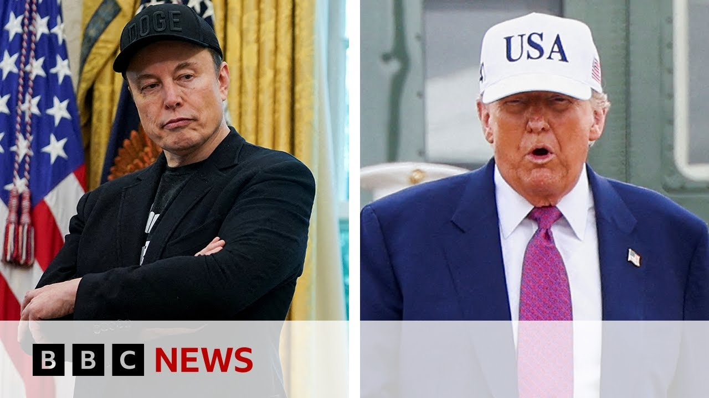

【埃隆·马斯克对部分关于唐纳德·特朗普的帖子表示“后悔” | BBC新闻】
Summary: After a public feud, Elon Musk apologized for overly critical posts about Donald Trump, raising concerns about his business ties with the US government, including Tesla's falling stock and SpaceX's contracts.
摘要： 在公开争执后，埃隆·马斯克为对唐纳德·特朗普的过度批评帖子道歉，这引发了对他在美国政府业务关系的担忧，包括特斯拉股价下跌和SpaceX的合同问题。

⏱️ Estimated Reading Time: 7 min
📚 六级生词 📚 雅思生词 📚 托福生词 📚 专八生词 📚 SAT生词 📚 考研生词 📚 GRE生词 📚 高考生词 📚 视频里的生词
Now, after their bitter social media fallout, the Tesla boss Elon Musk has apologized for posts he made about US President Donald Trump.
如今，在激烈的社交媒体争执后，特斯拉老板埃隆·马斯克为他关于美国总统唐纳德·特朗普的帖子道歉。
Writing on his platform X, "Mr. Musk says, "I regret some of my posts about President Donald Trump last week, that went too far."
他在自己的平台X上写道：“马斯克先生表示，‘我后悔上周关于特朗普总统的一些帖子，它们太过分了。’”
The backdrop here is of course the bitter war of words that culminated in the tech billionaire suggesting without evidence that President Trump appears in unreleased files related to the late sex offender Jeffrey Epstein.
背景当然是这场激烈的口水战，最终以这位科技亿万富翁毫无证据地暗示特朗普总统出现在与已故性犯罪者杰弗里·爱泼斯坦有关的未公开文件中。
The situation has inevitably cast major doubts over Mr. Musk's various business interests with the US government.
这一情况不可避免地引发了人们对马斯克与美国政府多项商业利益的严重质疑。
Well, to look at this story, I'm now joined by our business presenter, Sally Bandok.
为了深入探讨这一事件，我们现在请来了商业主持人莎莉·班多克。
And Sally, how surprising is this latest post from Elon Musk?
莎莉，埃隆·马斯克的最新帖子有多令人意外？
Well, I would say it's not that surprising.
嗯，我认为这并不那么令人意外。
Uh, as you've just read out there, his his uh post on X was, "I regret some of my posts about President Trump last week.
呃，正如你刚才读到的那样，他在X上的帖子是：“我后悔上周关于特朗普总统的一些帖子。
They went too far."
它们太过分了。”
What kicked the spat off in the first place between these two men was his initial criticism of what President Trump calls my big beautiful bill, which is his really critical policy move that's currently going through uh the Senate.
两人争执的起因是他最初对特朗普总统所谓的“我的大美丽法案”的批评，这是特朗普目前正在推动的一项关键政策，正在参议院审议中。
It needs approval in the Senate so that he can go ahead with what many argue is President Trump's uh biggest change in tax and spend which will have huge implications for the US economy.
它需要参议院批准，以便他能够推进许多人认为是特朗普总统在税收和支出方面的最大变革，这将对美国经济产生巨大影响。
And Elon Musk was really critical of whether that was a good idea or not.
而埃隆·马斯克对这一政策是否明智提出了严厉批评。
Accusing the president of putting the US economy in a perilous state because the level of debt would be far too high.
他指责总统将美国经济置于危险境地，因为债务水平将过高。
And that's where it all started.
这就是一切的开始。
But then we are all well aware, aren't we, of just how toxic that very public argument became uh between the two of them uh mudslinging on truth social and X and and where it's sort of ended up.
但后来我们都非常清楚，他们之间这场公开争论变得多么恶劣，在Truth Social和X上互相攻击，最终演变成这样。
So now uh with the days that have gone by and all the commentary and the analysis uh Elon Musk is saying I regret some parts, not all of it, but some of it.
所以现在，随着时间流逝和各方评论分析，埃隆·马斯克表示他后悔部分内容，并非全部，只是一部分。
We're not sure which parts he regrets just yet, are we, Sally?
我们还不知道他具体后悔哪些部分，对吧，莎莉？
But in terms of what was at stake for Elon Musk, we talked about, you know, the massive government contracts his companies have in the US and of course Tesla's share price also took a hit after that spat.
但就埃隆·马斯克面临的风险而言，我们讨论过他在美国的公司拥有大量政府合同，当然特斯拉股价也在争执后下跌。
Just talk to us about what was at stake for him.
请谈谈他面临的风险。
Yeah. and what what's still at stake.
是的，以及仍然存在的风险。
Let's not forget this does not mean by any means that these two are going to start to be uh very good friends again by any means.
我们不要忘记，这绝不意味着两人会重新成为好朋友。
But for uh Elon Musk, his companies, we've got Tesla, of course, the electric vehicles company, we've got SpaceX, got Starlink, they all do a huge amount of business with the US government.
但对埃隆·马斯克来说，他的公司——特斯拉（电动汽车公司）、SpaceX和Starlink——都与美国政府有大量业务往来。
If I give you one example, SpaceX has been awarded almost $21 billion in US government contracts since 2008.
举个例子，自2008年以来，SpaceX已获得近210亿美元的美国政府合同。
That was according to analysis by BBC Verify.
这是根据BBC Verify的分析得出的。
And on Thursday last week, when this um argument was just going beyond belief on social media, Tesla shares went into freeall, dropping some 14%.
上周四，当这场争论在社交媒体上愈演愈烈时，特斯拉股价暴跌约14%。
If we look at the share value now, they're down around 5% in the last 5 days.
目前，特斯拉股价在过去5天里下跌了约5%。
And that's tens of billions of dollars in value wiped off the the market capitalization of Tesla.
这意味着特斯拉市值蒸发了数百亿美元。
But there's very important things at stake here for Elon Musk.
但对埃隆·马斯克来说，这里涉及非常重要的利益。
So Tesla at the end of this week is actually going to be uh testing a batch of its robo taxes in Austin, Texas.
特斯拉本周将在得克萨斯州奥斯汀测试一批机器人出租车。
And he needs regulatory approval for that.
他需要获得监管批准。
and also these other government contracts, Starlink etc.
还有其他政府合同，比如Starlink等。
Um SpaceX I've mentioned it's a very important relationship with the US government but it's not something that can be unraveled quickly.
SpaceX与美国政府的关系非常重要，但这种关系不可能迅速解除。
For example uh the contracts SpaceX has with NASA with the US government that would take a lot of unraveling legally.
例如，SpaceX与美国宇航局和美国政府的合同在法律上需要大量程序才能解除。
So it's not easily uh undone despite what's going on between President Trump and Elon Musk in terms of their personal views and opinions.
因此，尽管特朗普总统和埃隆·马斯克在个人观点上存在分歧，但这些合同不会轻易取消。
But we'll see how this plays out going forward.
但我们将继续关注事态发展。
Um because of course Elon Musk has said in that latest post on X he does regret some of his comments but as as you said Katherine we don't know which ones we don't know which details and this will go on and on so there'll be more to come to be continued a lot to look forward to Sally thank you that's our business presenter Sally Bandock
呃，当然埃隆·马斯克在X的最新帖子中表示他确实后悔部分言论，但正如凯瑟琳所说，我们不知道具体是哪些，也不知道细节，而且这场争论还会持续，所以还会有更多后续内容值得期待。莎莉，谢谢，这是我们的商业主持人莎莉·班多克。